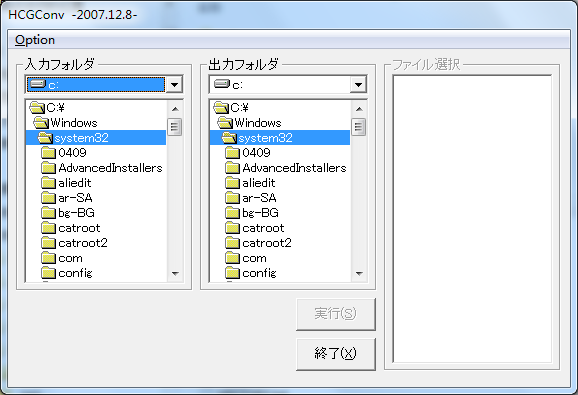
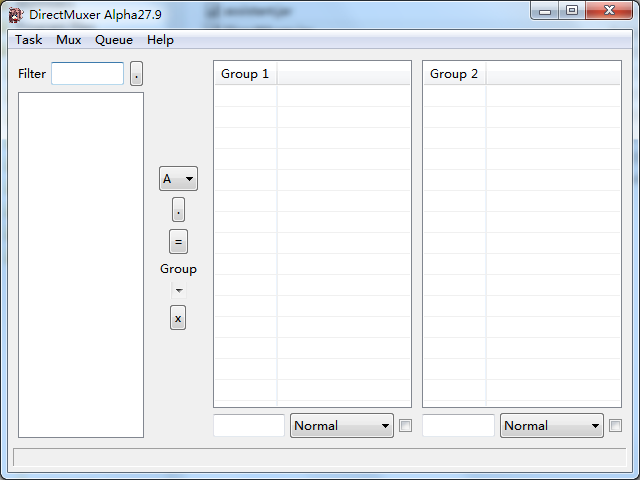
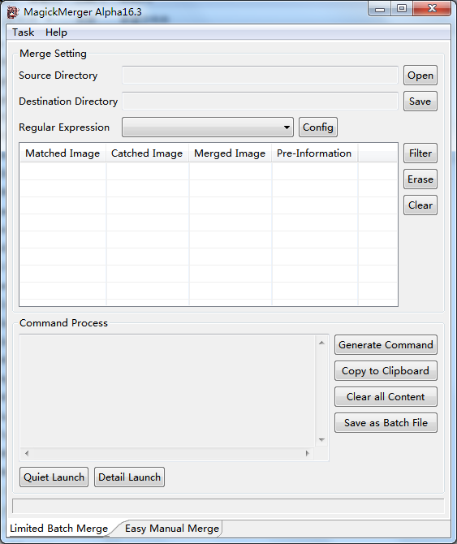
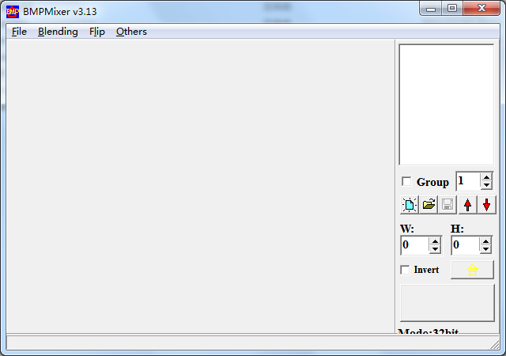

This article only introduce most widely used ripping tools(content may like |[Pennywise]|'s Westside thread) and some my opinions. Welcome to suggest or correct.
Universal Tool
1,
WESTSIDE
http://www.westside.co.jp/
WESTSIDE can extract most of galgames from 1994 to now, supports many platforms such as PC,PS,PS2,PS3,SS,DS.
Though it's a commercial collection of tools, it provides some free tools, see
http://www.westside.co.jp/download/free/index.html
In the commmon we search galgame infos like name, company with using GameUtilityDB and then get needed tool.
Usage infos of GameUtilityDB see
http://www.westside.co.jp/download/free/gudb/gudb.htm

Usually we can get image of saled cd from internet. Here, we should thank |[Pennywise]| for his brilliant contribution, because he provides Westside's BT sharing, some used widely tools and good infos, see
http://www.hongfire.com/forum/showthread.php?t=58013
Thanks for JimBond007's http downloading, see
http://www.hongfire.com/forum/showpost.php?p=1381809
And JimBond007 wrote a tutorial on how to search effectively Westside's tools, see
http://www.hongfire.com/forum/showpost.php?p=1020256
Note:
WESTSIDE lacks enough infos about new galgames due to lag in sale. If so, we can make use of experiences based on the company and the archive extension (all may are the specialties of package format), then we may find available tools. If you find nothing, Crass may be a good choice.
2,
Susie
Because of open spi structure, it's used widely in japanese software world, ie. famous ACDSee also supports.
http://dawg.s56.xrea.com/help_search.html
(You can search by name, company, saled date, archive extension during it, only giving spi's indirect link, it may cost some work to find.)
http://newjizou.s6.xrea.com/
(You can hunt out ripping infos of galgames from 2003.1 to 2004.7, also only indirect link)
http://www.cgdreamland.com/projectsusie/
(Cgdreamland provides ripping infos of galgames from 1991 to 2004, you can directly get spi)
http://www.fireemblem.net/cjb/zhuanti/susie/040625.htm
(bt870411 collects ripping infos of galgames from 1995.11 to 2007.2, but no any link, only spi's name, great value)
Download see
http://www.digitalpad.co.jp/~takechin/download.html
Usage infos see jsnut's guide
http://www.hongfire.com/forum/showthread.php?t=8143
Note:
Because Susie don't support batch converting, though there is spi2bmp, it's always in trouble. So we usually use third software like Grapholic which can load spi. It's easier to use third software than directly to use Susie, but third software isn't a good judge of spi. They automatically load relevant spi only according to the archive extension. Many galgame engines use the same name for their files such as dat and arc. Obviously, one simply based on extension always makes trouble. So it's also necessary to use Susie(judge by not only on extension, but also magic). If you know which spi can be properly used in which archive, you can only depend on Graphlic and Susie's spi, but it usually costs hard work to get so many experiences.
Another Note:
As same as the problems of some open source projects, spi only depends on developer's passion. And there is no organise which can manage them. Third, the ability or effect of spi is irregular. Now some famous developers nearly stops, and Susie can be replaced by other tools.
3,
Crass(Crage)
Though Chinese 痴漢公賊 stopped development of Crass, Crass is still the greatest extractor. Crass mainly consists of Crage used in extracting, uses cui as interface, totalled supports more than one hundred galgame engines and more than thousands of galgames. 痴漢公賊 shares Crass's source code. If you are interested in studing these, it's very useful.
Crage is a very powerful command tool, has many parameters. -p, -l, -d, -o, -u, -O are most important for us. -p specifies single input archive. -l specifies index file if exists. -d specifies input directory in which all archives will be loaded by Crage. -o specifies output directory. -u specifies which cui to force use. -O specifies processing method of special galgame(usually encrypted) and always cooperates with -u. You'd better check every cui's document then know which galgame need to use the particular -u, -O.
Another Chinese Lighting makes a gui for Crage. With it Crage is easier to use. Of course, CrageGUI include a English version. At the same time i writes a Java GUI providing some special features.

Detailed infos see his blog(discarded)
http://galcrass.blog124.fc2.com/
Download source code and updated component see
http://www.box.net/shared/rf8rhr5mrr
4,
arc_conv
After Crass is deprecated by 痴漢公賊, finally Russian w8m brings arc_conv.
i know it just a moment ago, only give some simple description: arc_conv is a commandline tool, supports quite a few galgame engines to extract and a little galgame engines to repack, additionally includes find_common, find_anime, text_conv.
arc_conv is highly developing and has potential beyond Crass.
now arc_conv's most contribution is RioShiina's support. guys can upload executable file and script archive to request support when meeting unsupported RioShiina's galgame which arc_conv is helplessness, also someone can report new galgame engine.
Detailed infos see
http://forums.desu.ru/topic/330-archive-extractor
Download see
http://www.mediafire.com/?muchdnunw5z70
5,
ExtractData
Developer 結羽 makes it at first, but gived up owing to minori. I think ExtractData is most like a genuine software in all extractor. It has powerful setting, include specified file search, output mode, alpha option, blending effect, buffer size, spi support and so on.
It not only supports some popular galgame engines like Majiro Script Engine, NScripter and kirikiri2, but also has own feature - simply decryption. The highlight of ExtractData is automatic decryption encrypted xp3. Some Companies only use some simple modes to encrypt xp3, we can easily extract these xp3 under the help of ExtractData(please open simply decryption). But ExtractData isn't the master key of all encrypted xp3, some Companies do other encryption mode even strongly complicated encryption.
I think that ExtractData lacks enough expansibility. All core codes need 結羽's own programming. From a development point of view, it's not a good phenomenon. Though it can load spi, the problems of spi make it not be a true strong point that should be a advantage of ExtractData.
Download see
http://www.box.net/shared/cm8ypc3o5r

Note:
Before using ExtractData to extract xp3, you'd better try Crass which provides many decryption modes for kirikiri2 or unbeatable xp3dumper in kirikiri2 decryption.
6,
HCG Converter
Starts by 鷹場狼, the newest version updated by the end of 2007.
It can automatically and properly judge archive and provide particular option for some galgame engines. And it has some features like bmp force out, xor decryption, alpha reversal.
Detailed infos see
http://www.angelfire.com/nm/fbkcfy/

7,
asmodean's commandline tools
The name is only a concept, it means a set of tools programmed by asmodean, a little like WESTSIDE.
asmodean always produces tools for new galgames as soon as possible.
All of asmodean's tools are commandline. It need some basic knowledges about commandline, such as absolute or relative path, required or optional parameter, input or output. If you see them a little, with asmodean's hint, it's not hard to use these tools. In fact, we don't care about how or why these command work, only follow the format of usage and then write a right command. If you want to study implement of algorithm, asmodean always releases his source codes, i believe you will not lose them.
Detailed see his blog
http://asmodean.reverse.net/
Note:
The difficulty is that it's hard to batch deal with a great lot of files, because asmodean's commandline tool don't support wildcard character.
1,Run in Windows:"for %variable in (set) do command %variable" in cmd or "for %%variable in (set) do command %%variable" in bat(variable is only a parameter, can be any valid character; set also is only a parameter, means file group, allow wildcard character)
2,Install cygwin, use similar Linux/Unix's command
3,Build a macro with regular expression is quite OK. For example, i write a macro and use in EmEditor(you must under concrete issue alter regular expression):
src="(\\w+\\.<file extension>)"
cmd="command \\1 [parameter]"
document.selection.Replace(src,cmd,eeFindReplaceRegExp|eeReplaceAll)
4,Use small tool which can build text template(write a general command template), then use template's variate to edit.
5,list all files at first, then use replace function of normal text editor like notepad to edit, until all command fit the format.
6,welcome your solution.
8,
GameViewer
Programmed by Chinese prefetchnta.
It supports some games from great companies like Falcom,GAINAX, 工画堂, KONAMI. There are many features that other tools can't handle. It can extract 3D material, play multi-frame with alpha blending, show customized complicated 3D effect with D3D9's shader and view, change, flip RGB or alpha channel. These are the strong advantags for it. GameViewer aims at 3D render, so the ability as extractor isn't good as some other tools.
The open flexible architecture of GameViewer makes up of three different plug-in: extract plug-in(load archive), image plug-in(view image directly from archive and transform) and audio plug-in(play audio file directly from archive and convert). It has good expansibility, we can specify plug-in and add new games through editing script of input in xml. It's remarkable that prefetchnta has opened SDK.
Detailed infos see his blog
http://prefetchnta.blog.ccidnet. ... -itemid-218668.html

9,
WESTSIDE Media Extractor
WESTSIDE releases own Media Extractor instead of Neko57. It can extract any particular format determined by its plug-in.
Media Extractor can config whether extraction of any file and any type and restrict strictly variable size from 0.0001 to 999999. In plug-in setting, it's feasible to enable or disable any plug-in and view advanced properties of some plug-in.
The default plug-in are provided by Media Extractor, including AVI, BMP, JPG, MID, OGG, PNG, WAV, WMV.
Download see
http://www.westside.co.jp/download/free/index.html
Detailed infos see
http://www.westside.co.jp/download/free/ws/20080108/index.html

10,
スペシャルねこまんま57号(Neko57)
Though it is as a veteran here, essentially うさぴょん's Neko57 isn't only a extractor. It has many functions that now always is used widely, i always pick one - CRC32/MD5 check.
For extraction it can force find bmp, jpg, png, wav, ogg, avi. In fact this ability is limited, it only can extract some galgame engines that don't use unusual compression, don't transform and don't encrypt those files, because it works only according to build-in condition code. Neko57 only judge by condition code then force output. Once files exist, Neko57 ignore anything, only force to extract.
Download see
http://www.vector.co.jp/soft/dl/win95/hardware/se254476.html
Usage infos for extraction see
http://www.westside.co.jp/otacd/help/neko/neko.htm

11,
Grapholic
Grapholic provides own plug-in - ghp, but they're so old that seems to be useless. I treat it as a third software which can load spi.
If you don't like, Vix is alteration in japanese software.
Download see
http://www.vector.co.jp/soft/win95/art/se039492.html

---------------------------------------------------------------------------------------------------------------------------------------------
Special Tool
1,
xp3dumper
Since 痴漢公賊 left ACG world, it's impossible to extract specially encrypted kirikiri2 galgames. But xp3dumper developed by resty remedy the situation.
xp3dumper not "violent" decrypt galgame, but during hijack exploit galgame itself to decrypt resource, effect outstanding, as it were extract any kirikiri2 galgame.
xp3dumper has 3 modes: traditional, interactive and exporter, support converting tlg to png, and carry powerful plugin and anti function. Furthermore with a experimental xp3maker, can be used to making specially encrypted archive.
resty don't recommend for traditional mode. It may in suck.
interactive mode required to enter path of wanted archive. There are 3 notations: kirikiri2, absolute and relative path.
Usually interactive mode is enough to scrape most situations, it will show exporter mode sometimes. The usage of exporter mode as follows:
1, put !exporteraddr.tpm into game directory only, start game, then it will find the exporter_address.txt which record a hex value. delete !exporteraddr.tpm itself.
3, create the arc_list.txt under game directory, which entering path of all wanted archive.
4, start game, use DllLoader provided by resty, execute command following
DllLoader <pid> <xp3dumper>
here pid we can get it from pid column correspond with game process in opening task manager, and xp3dumper means its path. Of course we can other injection tool. The only target for us is inject xp3dumper into game process.
5, if injection succeed, it will prompt xp3dumper interface. select exporter mode, enter hex in exporter_address.txt. wait for finishing.

Luckly, Chinese clowwindy makes xp3dumper_gui so that we can easy use xp3dumper. Detailed infos see
http://www.cnblogs.com/clowwindy ... XP3_Dumper_GUI.html
Also, someone may develop a variant distribution. Detailed infos see
http://code.google.com/p/xp3dumpergui/

Recently, resty work out a new mode to extract some special galgames. i write a guide to introduce it, see
http://haibara4cgrip.wordpress.c ... %e6%a8%a1%e5%bc%8f/
Here i upload completed pure tpm version here, because xp3dumper and its plugin distribute with a little confusion.
http://www.box.net/shared/pik7zk8r7n
Download source code seee
https://www.yukict.com/bbs/thread-47243-1-1.html
2,
真美ツールズ(MamiList3)
せーじ's MamiList3 mainly is used to extract ELF's galgames, from Words Worth to DragonKnight4.
Detailed infos see
http://www.dsl.gr.jp/~sage/sagepage/

3,
KayugaCut
It's well-known that it's hard to deal with アトリエかぐや's CG.
The engine in sub-brand of アトリエかぐや is different, like TEAM HEARTBEAT and DREIZEHN use a common one, other used in Berkshire Yorkshire and Honky-Tonk Pumpkin.
The property of first one is whole frame event image(with a mask edition), decomposed character image(separate into clothing and face but in whole frame or decomposed frame).
We're always tired of second one - decomposed frame event image(bring complicated combination of background, body action, face and h-mask/succus with transparency) and decomposed frame character image(bring complicated combination of costume and expression).
Back to KayugaCut, the writer Chinese ffv likes Berkshire Yorkshire very much, so he develops KayugaCut. It aims to be a image software that can easily convert and process アトリエかぐや's CG.
KayugaCut can extract almost all アトリエかぐや's galgames, here we should pay attention to new ones that may need select LZSS decode or load particular xor configuration.
Also KayugaCut can composite アトリエかぐや's decomposed image(only from archive) though it's manual. It's almost impossible to composite all imaginable permutation and combination from decomposed event image by ourself. I heartily wish ffv can add a function - automatic composite, though it is so impossible.
Though WESTSIDE basically releases tool with composite feature corresponding with new アトリエかぐや's galgames, old galgames must depend on KayugaCut to manually composite.
Download see
http://sircus0001.hp.infoseek.co.jp/soft/soft.htm

4,
萌衣☆Player(mei-player)
The analogous MPEG standard made by Entis. There are five classes. Ususally company respectively use eri, mio and mei to transform image, audio and video, then use noa to pack them.
So we first use Crass to extract, then use mei-player to transform.
Download see
http://www.entis.jp/eri/player/index.html

Notice:
mei-player don't support OpenDML, as i known it's no way to successfully transcode whole mei if produced avi is bigger than 4G.
5,
m-akita's commandline tools
m-akita is a cracker same as asmodean, tools wrote all are commandline. But still his tool can be applied to specified galgame, so low generality.
except using for ripping, most of m-akita's tools can make binary script to plaintext. It's the best gift for galgame translator in every country.
Detailed infos see
http://m-akita.sakura.ne.jp/
6,
KID Tools GUI
In China there are a mass of KID fans, Inventer is Chinese AyuanX, It can extract all kinds of resources in KID's galgames.
Download see
http://ayuanx.spaces.live.com/bl ... 4F47FA92!1005.entry

---------------------------------------------------------------------------------------------------------------------------------------------
Assistant Tool
1,
DirectMuxer
At the beginning of DirectMuxer is only the GUI of mux_png, but since i completed build-in composite, resolve many restrictions of mux_png itself, and improve more and more. Now it's the most powerful composite tool.
Currently there are key features as follows:
1, Support in ordered cartesian product for composite from any number of image group.
2, Support required continuous product for composite from any number of image group.
3, Support Alpha Blending, Transparent Blitting, Opaque Override, ComplexComposite build-in composite modes, in which Alpha Blending support 5 methods for alpha preservation, Tansparent Blitting support custom filter color, Opaque Override support offset prediction(may occur error), Complex Composite support 14 composition methods(Normal, LinearDodge, LinearBurn, Multiply, Screen, Overlay, HardLight, SoftLight, ColorDodge, ColorBurn, Lighten, Darken, Difference, Exclusion).
4, Support task queue.
5, Support automatically capture coordinate in filename with 3 profiles(asmodean, RioShiina, AI6WIN), and automatically calculate coordinate offset in composite.
6, Support concurrent computation in multi-core CPU.
7, Support drag and drop of native and in component.
8, Support preview image and composited.
9, Support simple custom prefix, delimiter, suffix of filename of composited image.
Detail infos see
https://www.yukict.com/bbs/thread-21805-1-1.html

Note:
Program is a dependency of
Java Runtime Environment.
2,
PicComposite
Before i develop DirectMuxer, i never see such magical composite tool, i regret that i so far as miss out so long.
its powerful functions consist of basic features and special configurations.
at first, introduce basic features - delta composite, transform, order, search same image, paste, decomposite.
delta composite - choose all images from group list, composite each other at a time, save them in terms of combination
transform - convert pictures to specified format, erase original files
order - name images after form of <yearmonthdaytime_groupNo_classNo>, allow to duplicate files
same image search - look for same imagse in current directory, list them
paste - similar as delta composite, composite images with one-on-one name in different group
decomposite - crop as same as size of resized preview window
secondly, come to special configurations as follows:
save format - 24/32-bit bmp/png, 24-bit jpg or 24-bit bmp with mask
save option - destination mode(file or clipboard), size method(original size or preview window area), flip method, whether overwrite, whether creat sub-directory named after filename in most left group
preview - whether open preview window
automatic adjustment - automatically adjust final size after position composite
always on top - no more explanation
coordinate position - get position during filename, rule: number at end of filename after upper/lowercase x/y or other delimiters such as <+->;
alpha usage - treat 8/24-bit mask named after <filename_(underscore)> as alpha;
alpha flip - horizontal and vertical
alpha reversal - no more explanation
i summarize according to order from left to right inter menu and from above to under intra sub-menu, i think you should understand a little, if so, i'm happy.
Finally i upload PicComposite here
http://www.box.net/shared/d1axgx6bu1

Note:
I don't like PicComposite's patterns of automatic naming after number, it's not convenient to check composite result. And PicComposite ignores those transitional images in combination composite which always are valid CG, so i develop DirectMuxer.
3,
MagickMerger
MagickMerger is a GUI for related composite command in ImageMagick written by me.
Program is separated into Limited Auto-Merge and Easy Manual-Merge funtions：Limited Auto-Merge can according to given regular expression generate batch command, 5 profiles as default, there are Alpha Blending, Geometry Composite, Mask Addition, Mask Separation, Percent Cropping; Easy Manual-Merge can specify single file to compose, 5 sub-funtions are: Geometry Composite, Mask Addition, Trim Cropping, Alpha Separation, Canvas Creation.
Program provides three preferences to customize: General, Image Access for configuration of access path; Launch, Batch File for configuration of temporary batch file path; Software, ImageMagick for configuration of ImageMagick directory.
Detail infos see
https://www.yukict.com/bbs/viewt ... mp;page=1#pid312598

Note:
Program is a dependency of
Java Runtime Environment and
ImageMagick(Windows version)
4,
EasyMerge
The rapid composite tool progammed by collaborator coolshake. It can distinguish differnet size of image with transparency and alpha channel, install background color to be black, white and auto-detect, enable or disable keyword filter for composite rule. it also support coordinate location and composite preview.
Though EasyMerge can automatically composite images of differnet group, it has a disadvantage because currently it only support three groups for maximum, in fact requirement may be far more than the number.
Download see
http://flunky99.blogspot.com/2009/04/easymerge-v15-151.html

5,
BMPMixer
Also from ffv's excellent work, currently the well tool in processing image composite. It owns powerful features - 6 blend mode, 2 flip method, position adjustment and group composite.
The point of BMPMixer is group composite. Now BMPMixer can based on group(combination of one background with multi-overlay) automatically composite decomposed images in whole frame. The loaded image order and wanted overlay number determine composite rule. So it's easy to composite these cg from Active, BISHOP, DISCOVERY, Selen and so on.
Download see
http://mito.cool.ne.jp/mvem003/soft/soft.htm

6,
BatchBlender
BatchBlender is a GUI for Majiro mask me which is 痴汉公贼's complementary commandline tool in Crass written by me, Majiro mask me can handle Transparent Blitting which most Alpha Blending tool can't handle.
Program is separated into Auto Batch and Manual Work modes: in Auto Batch it can according to given regular expression generate batch command; in Manual Work it can specify single file to compose. Program has settings for Alpha Reverse, Backgroud Color specification and Filter Color specification.
Program provides three preferences to customize: General, Image Access for configuration of access path; Launch, Batch File for configuration of temporary batch file path; Program, Invoke Tool for configuration of Majiro_mask_me path.
Detail infos see
https://www.yukict.com/bbs/thread-21439-1-1.html

Note:
Program is a dependency of
Java Runtime Environment and Majiro mask me.
Another note:
Majiro mask me seems has some composite bugs.
---------------------------------------------------------------------------------------------------------------------------------------------
【ChangeLog】
2011.05.21 v2.5 added arc_conv, xp3dumper_gui, removed ImageMagick, mux_png, fixed some descriptions
2010.07.18 v2.4 added xp3dumper, m-akita's tools, removed GameLoader Pro, fixed many descriptions
2009.04.24 v2.3 added MagickMerger, BatchBlender/Majiro_mask_me, DirectMuxer, EasyMerge
2008.05.22 v2.2 added ImageMagick, PicComposite, WESTSIDE Media Extractor
2008.03.29 v2.1 added screen capture for new chinese version, fixed some descriptions
2008.01.27 v2.0 wrote a english version, sorted some tools, added asmodean's tools
2007.09.14 v1.3 added GameViewer
2007.08.06 v1.2 added GameLoader Pro
2007.07.31 v1.1 added Entis' tools
2007.07.27 v1.0 re-wrote to a chinese tool introduction with screen capture, additionally imported WESTSIDE, Crass, ExtractData, HCG Converter, KayugaCut, BMPMixer, Neko57, MamiList3, KID Tools GUI, mux_png
2006.08.16 v0.0 wrote a chinese guide about Susie, Grapholic
[
本帖最后由 haibara 于 2011-05-21 19:09 编辑 ]